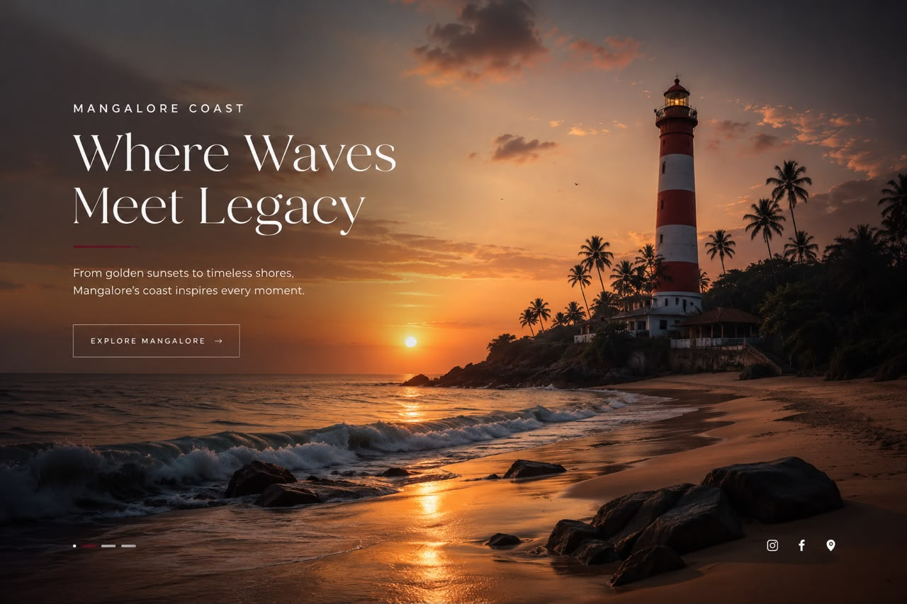
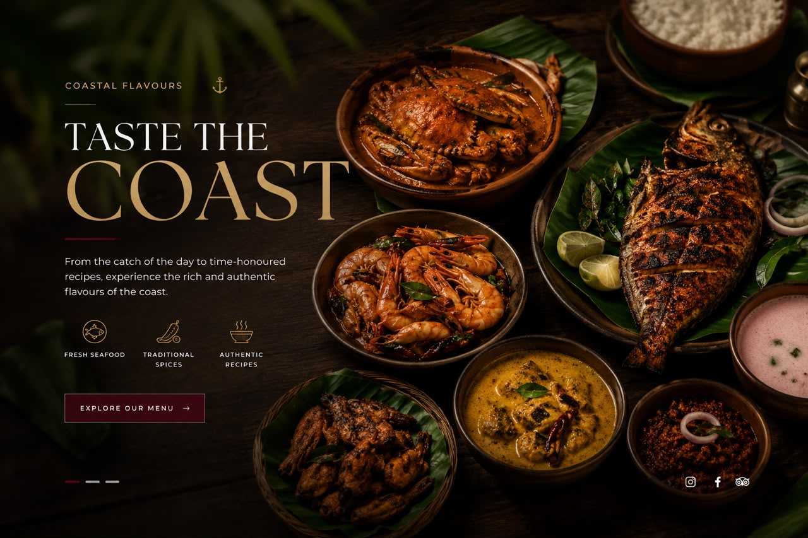
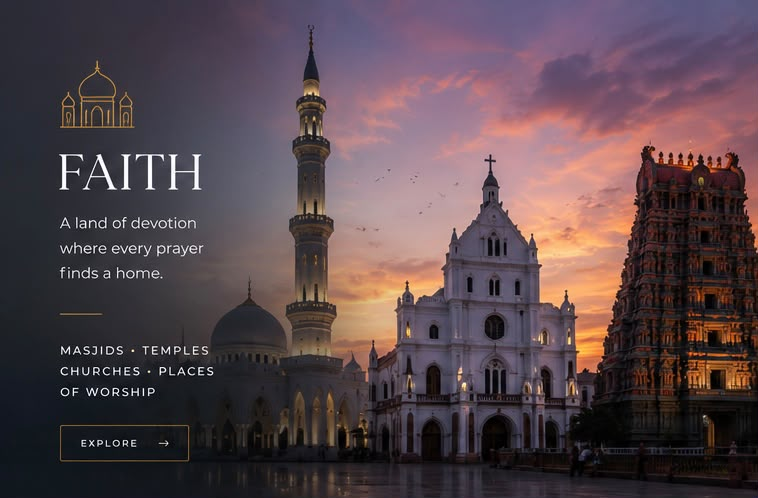
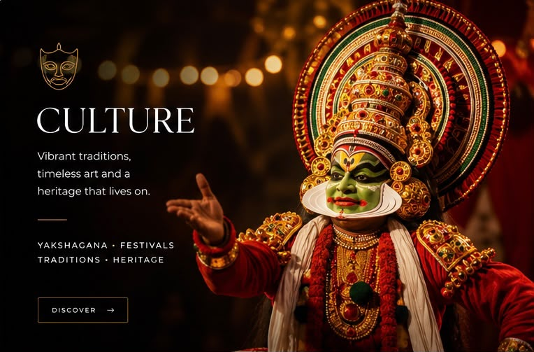
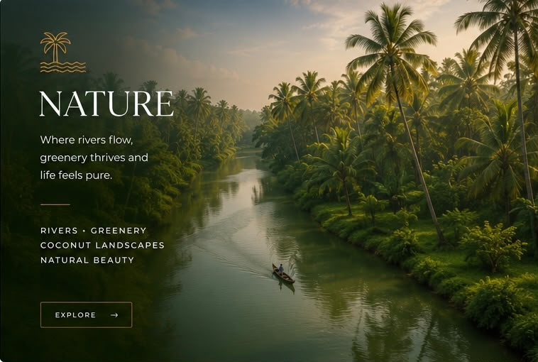

Where the Arabian Sea meets timeless traditions, coastal flavours, faith, culture, business and nature.
Mangaluru is more than a place on the map. It is a meeting point of ocean, people, traditions, food, faith, business and breathtaking natural beauty. Explore the different sides of the coastal city.

Beaches, golden sunsets, waves, fishing shores and iconic coastal landscapes.

Seafood, traditional recipes, spices and unforgettable coastal flavours.

Masjids, temples, churches and places of worship living together across the city.

Yakshagana, festivals, heritage, art and traditions passed through generations.
Port, industries, trade, logistics and the business ecosystem powering the region.

Rivers, greenery, coconut landscapes and the natural beauty surrounding Mangaluru.
Discover the beaches and coastal landscapes around Mangaluru. From peaceful mornings to golden sunsets, the Arabian Sea defines the character of this city.
One of Mangaluru's popular beaches, known for its coastline and sunsets.
OPEN LOCATION →A historic waterfront location connected with the city's coastal heritage.
OPEN LOCATION →Mangaluru's food culture is deeply connected with the coast. Seafood, coconut, spices and traditional recipes create a distinctive culinary identity.
Fish, prawns, crab and other seafood are central to coastal cuisine.
A delicate rice dosa traditionally enjoyed with coastal curries.
A classic coastal preparation with spices, coconut and tamarind.
A famous coastal-style dish known for its rich roasted spice flavour.
Mangaluru has a rich spiritual landscape where mosques, temples, churches and other places of worship form an important part of the city's identity.
From Yakshagana and traditional festivals to folk art, music and heritage, Mangaluru carries a culture that continues to evolve while preserving its roots.
A spectacular traditional theatre form of coastal Karnataka.
Colourful celebrations bring communities together throughout the year.
Historic architecture, traditions and stories shape the city's identity.
Explore folk performances, crafts, music and coastal traditions.
Mangaluru is an important coastal business centre with a major port, industries, logistics, trade and a growing urban economy.
The city's coastal location supports transport, trade and logistics.
Rivers, backwaters, coconut trees, greenery and coastal landscapes surround Mangaluru and give the city its distinctive natural character.
Coconut plantations and greenery surround the city and its outskirts.
Where rivers, forests, beaches and the Arabian Sea meet.